Virtual Machine Manager and UCS¶
Overview¶
Virtual Machine Manager integration allows for the fabric to extend network policy and policy group definitions into virtual switches residing on a hypervisor. This integration automates critical network plumbing steps that typically stand as delays in the deployment of virtual and compute resources, by automatically configuring the required fabric side and hypervisor virtual switch encapsulation.
The general hierarchy of VMM configuration is as shown in the diagram below:
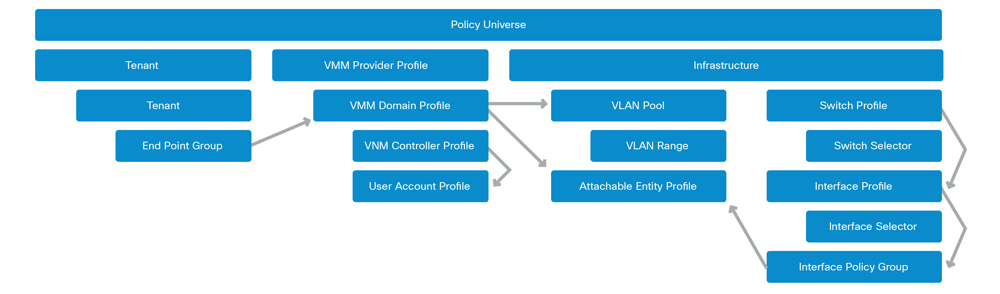{kind=link}
Problem Description¶
When attached to a Cisco UCS Fabric Interconnect, two hosts are unable to reach one another or unable to resolve one another’s MAC addresses.
Symptom 1¶
Packet captures running on the sending host, show that it is in fact being transmitted, however it never reaches the destination host. Creating static ARP entries on both devices for one another shows that traffic allowed by policy is able to be exchanged via ICMP, etc.
The UCS Fabric Interconnect is configured with two uplinks that are configured as disjoint layer-2 domains.
Verification¶
The problem in this situation is that the UCS FI has two uplinks with disjoint layer-2, where the VLAN that is being used for the ARP is using the non-ACI uplink as the designated forwarder. This means that the fabric will not receive the ARP frames and as a result cannot unicast them to the host. The easiest way to determine if this problem is impacting the environment, is to use the following command on the UCS FI in NX-OS mode, substituting the VLAN ID for the one that is attached to the EPG. This can be determined by using the “show platform software enm internal info vlandb id <vlan>” command as shown below:
FI-A(nxos)# show platform software enm internal info vlandb id 248
vlan_id 248
-------------
Designated receiver: Po103
Membership:
Po103
FI-A(nxos)#
If the designated receiver is not the port-channel facing the ACI fabric, the uplink pinning settings in LAN manager will need to be adjusted. Use the LAN Uplink Manager in UCS to set the VLANs dedicated to ACI use to be pinned to the ACI fabric facing uplink.
For more information, please reference the Network Configuration section on Configuring LAN Pin Groups in the Cisco UCS Manager GUI Configuration Guide.
Symptom 2¶
- ARP requests are egressing ESX host on UCS blade, but not making it to the destination
- VM hosted on C-series appliance directly attached to fabric is able to reach the BD anycast gateway
- VM hosted on B-series chassis blade attached to fabric is unable to reach the BD anycast gateway
Verification¶
In this situation there are two VMs, one on a UCS blade chassis and another on a C200, and they are unable to ping one another, while on the same EPG. The C200 VM is able to ping the unicast gateway, however the UCS blade hosted VM is not able to ping the gateway.
The vSphere 5.5 pktcap-uw tool can be used to determine if outbound ARP requests are in fact leaving the VM and hitting the virtual switch.
~ # pktcap-uw --uplink vmnic3
The name of the uplink is vmnic3
No server port specifed, select 38100 as the port
Output the packet info to console.
Local CID 2
Listen on port 38100
Accept...Vsock connection from port 1027 cid 2
01:04:51.765509[1] Captured at EtherswitchDispath point, TSO not enabled, Checksum not offloaded and not verified, VLAN tag 602, length 60.
Segment[0] ---- 60 bytes:
0x0000: ffff ffff ffff 0050 56bb cccf 0806 0001
0x0010: 0800 0604 0001 0050 56bb cccf 0a01 000b
0x0020: 0000 0000 0000 0a01 0001 0000 0000 0000
0x0030: 0000 0000 0000 0000 0000 0000
By monitoring the packet count on the Veth### interface on the UCS in NX-OS mode, it is possible to confirm the packets were being received.
tsi-aci-ucsb-A(nxos)# show int Veth730
Vethernet730 is up
Bound Interface is Ethernet1/1/3
Port description is server 1/3, VNIC eth3
Hardware is Virtual, address is 000d.ecb1.a000
Port mode is trunk
Speed is auto-speed
Duplex mode is auto
300 seconds input rate 0 bits/sec, 0 packets/sec
300 seconds output rate 0 bits/sec, 0 packets/sec
Rx
36 unicast packets 3694 multicast packets 3487 broadcast packets
7217 input packets 667170 bytes
0 input packet drops
Tx
433 unicast packets 12625 multicast packets 44749 broadcast packets
57807 output packets 4453489 bytes
0 flood packets
0 output packet drops
So the problem is between the UCS fabric links and the leaf interfaces. Checking the counters on the leaf indicates no broadcast packets were ingressing.
Ethernet1/27 is up
admin state is up, Dedicated Interface
Belongs to po2
Hardware: 100/1000/10000/auto Ethernet, address: 7c69.f610.6d33 (bia 7c69.f610.6d33)
MTU 9000 bytes, BW 10000000 Kbit, DLY 1 usec
reliability 255/255, txload 1/255, rxload 1/255
Encapsulation ARPA, medium is broadcast
Port mode is trunk
full-duplex, 10 Gb/s, media type is 10G
Beacon is turned off
Auto-Negotiation is turned on
Input flow-control is off, output flow-control is off
Auto-mdix is turned off
Rate mode is dedicated
Switchport monitor is off
EtherType is 0x8100
EEE (efficient-ethernet) : n/a
Last link flapped 09:09:44
Last clearing of "show interface" counters never
4 interface resets
30 seconds input rate 75 bits/sec, 0 packets/sec
30 seconds output rate 712 bits/sec, 0 packets/sec
Load-Interval #2: 5 minute (300 seconds)
input rate 808 bps, 1 pps; output rate 616 bps, 0 pps
RX
193 unicast packets 5567 multicast packets 17365 broadcast packets
23125 input packets 2185064 bytes
0 jumbo packets 0 storm suppression packets
0 runts 0 giants 0 CRC 0 no buffer
0 input error 0 short frame 0 overrun 0 underrun 0 ignored
0 watchdog 0 bad etype drop 0 bad proto drop 0 if down drop
0 input with dribble 0 input discard
0 Rx pause
TX
129 unicast packets 5625 multicast packets 17900 broadcast packets
23654 output packets 1952861 bytes
0 jumbo packets
0 output error 0 collision 0 deferred 0 late collision
0 lost carrier 0 no carrier 0 babble 0 output discard
0 Tx pause
This indicates that traffic is egressing the ESX host, however not making it through to the leaf. One possible cause for this is that the frames are being tagged on upon leaving the ESX host, however are being stripped and placed on the native VLAN. The UCS configuration, specifically VLAN manager, can be checked and verified if VLAN 602 is incorrectly set as the native VLAN.
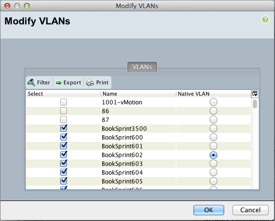{kind=link}
This means that frames egressing the UCS FI would be untagged heading towards the fabric, and thus would not be categorized into the appropriate EPG. By unmarking the VLAN as native, the frames are properly tagged and then categorized as being members of the EPG, and ICMP can immediately begin to function.
Problem Description¶
Virtual Machine Manager function is unable to register vCenter with APIC
Symptom¶
When attempting to register a vCenter with APIC, one or more of the following faults is raised:
F606262 [FSM:FAILED]: VMM Add-Controller FSM: comp/prov-VMware/ctrlr-[RTPACILab]-TestVcenter Failed to retrieve ServiceContent from the vCenter server 10.122.253.152(FSM:ifc:vmmmgr:CompCtrlrAdd)
F606351 [FSM:FAILED]: Task for updating comp:PolCont(TASK:ifc:vmmmgr:CompPolContUpdateCtrlrPol)
F16438 [FSM:STAGE:FAILED]: Establish connection Stage: comp/prov-VMware/ctrlr-[RTPACILab]-TestVcenter Failed to retrieve ServiceContent from the vCenter server 10.122.253.152(FSM-STAGE:ifc:vmmmgr:CompCtrlrAdd:Connect)
Verification¶
These faults typically indicate that there is an issue reaching vCenter from the APIC. Typical causes for this include:
- The VMM is configured to use the Out of Band management (OOBM) network to access vCenter however is on a separate subnet and has no route to reach that vCenter
- The IP address entered for the vCenter is incorrect
Log into the APIC and attempt a simple ping test to the remote vCenter:
admin@RTP_Apic1:~> ping 10.122.253.152
PING 10.122.253.152 (10.122.253.152) 56(84) bytes of data.
From 64.102.253.234 icmp_seq=1 Destination Host Unreachable
From 64.102.253.234 icmp_seq=2 Destination Host Unreachable
From 64.102.253.234 icmp_seq=3 Destination Host Unreachable
From 64.102.253.234 icmp_seq=4 Destination Host Unreachable
^C
In this case vCenter is not reachable from the APIC. By default the APIC will use the OOB interface for reaching remotely managed devices, so this would indicate that there is either a misconfiguration on the APIC or that the vCenter is unreachable by that address.
The first step is to verify if a proper default route is configured. This can be verified by navigating to the Tenants section, entering the mgmt tenant, and then inspecting the Node Management Addresses. If out of band management node management addresses have been configured, verify that the proper default gateway has been entered in that location.
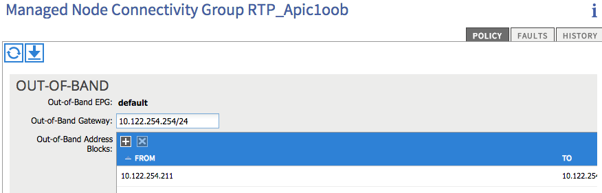{kind=link}
The default gateway is configured as 10.122.254.254/24
admin@RTP_Apic1:~> ping 10.122.254.254
PING 10.122.254.254 (10.122.254.254) 56(84) bytes of data.
From 10.122.254.211 icmp_seq=1 Destination Host Unreachable
From 10.122.254.211 icmp_seq=2 Destination Host Unreachable
From 10.122.254.211 icmp_seq=3 Destination Host Unreachable
From 10.122.254.211 icmp_seq=4 Destination Host Unreachable
^C
The Unreachable state indicates that the gateway is improperly configured, and this misconfiguration can be corrected by setting it to the appropriate 10.122.254.1.
After modifying the configured Out-of-Band gateway address:
admin@RTP_Apic1:~> ping 10.122.254.152
PING 10.122.254.152 (10.122.254.152) 56(84) bytes of data.
64 bytes from 10.122.254.152: icmp_seq=1 ttl=64 time=0.245 ms
64 bytes from 10.122.254.152: icmp_seq=2 ttl=64 time=0.258 ms
64 bytes from 10.122.254.152: icmp_seq=3 ttl=64 time=0.362 ms
64 bytes from 10.122.254.152: icmp_seq=4 ttl=64 time=0.344 ms
^C
The complete management configuration is as follows:
<fvTenant name="mgmt">
<fvBD name="inb"/>
<aaaDomainRef name="mgmt"/>
<mgmtMgmtP name="default">
<mgmtInB name="default"/>
<mgmtOoB name="default">
<mgmtRsOoBProv tnVzOOBBrCPName="oob_contract"/>
</mgmtOoB>
</mgmtMgmtP><a>p
<fvCtx name="inb"/>
<fvCtx name="oob">
<dnsLbl name="default"/>
</fvCtx>
<vzOOBBrCP name="oob_contract">
<vzSubj name="oob_subject">
<vzRsSubjFiltAtt tnVzFilterName="default"/>
<vzRsSubjFiltAtt tnVzFilterName="ssh"/>
</vzSubj>
</vzOOBBrCP>
<vzFilter name="ssh">
<vzEntry name="ssh"/>
</vzFilter>
<fvnsAddrInst name="rtp_leaf3ooboobaddr">
<fvnsUcastAddrBlk from="10.122.254.243" to="10.122.254.243"/>
</fvnsAddrInst>
<fvnsAddrInst name="RTP_Apic3ooboobaddr">
<fvnsUcastAddrBlk from="10.122.254.213" to="10.122.254.213"/>
</fvnsAddrInst>
<fvnsAddrInst name="RTP_Apic1ooboobaddr">
<fvnsUcastAddrBlk from="10.122.254.211" to="10.122.254.211"/>
</fvnsAddrInst>
<fvnsAddrInst name="RTP_Apic2ooboobaddr">
<fvnsUcastAddrBlk from="10.122.254.212" to="10.122.254.212"/>
</fvnsAddrInst>
<fvnsAddrInst name="rtp_spine1ooboobaddr">
<fvnsUcastAddrBlk from="10.122.254.244" to="10.122.254.244"/>
</fvnsAddrInst>
<fvnsAddrInst name="rtp_leaf1ooboobaddr">
<fvnsUcastAddrBlk from="10.122.254.241" to="10.122.254.241"/>
</fvnsAddrInst>
<fvnsAddrInst name="rtp_leaf2ooboobaddr">
<fvnsUcastAddrBlk from="10.122.254.242" to="10.122.254.242"/>
</fvnsAddrInst>
<fvnsAddrInst name="rtp_spine2ooboobaddr">
<fvnsUcastAddrBlk from="10.122.254.245" to="10.122.254.245"/>
</fvnsAddrInst>
<mgmtExtMgmtEntity name="default">
<mgmtInstP name="oob_emei">
<mgmtRsOoBCons tnVzOOBBrCPName="oob_contract"/>
<mgmtSubnet ip="0.0.0.0/0"/>
</mgmtInstP>
</mgmtExtMgmtEntity>
</fvTenant>
Now it is possible to verify that the vCenter VMM is reachable:
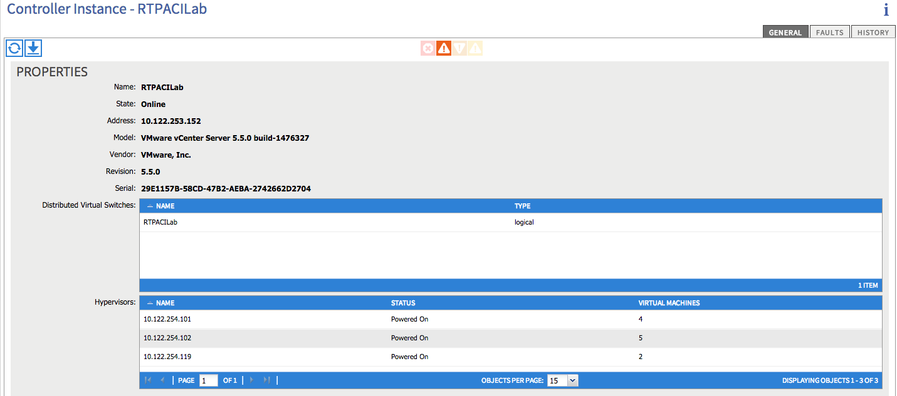{kind=link}
Symptom 2¶
The following fault is raised in the VMM manager
F16438 [FSM:STAGE:FAILED]: Establish connection Stage: comp/prov-VMware/ctrlr-[RTPACILab]-172.31.222.24 Failed to find datacenter BldgE in vCenter(FSM-STAGE:ifc:vmmmgr:CompCtrlrAdd:Connect)
F606262 [FSM:FAILED]: VMM Add-Controller FSM: comp/prov-VMware/ctrlr-[RTPACILab]-172.31.222.24 Failed to find datacenter BldgE in vCenter(FSM:ifc:vmmmgr:CompCtrlrAdd)
Verification¶
Ensure that the datacenter name in vCenter matches the “Datacenter” property configured in the VMM Controller policy configuration
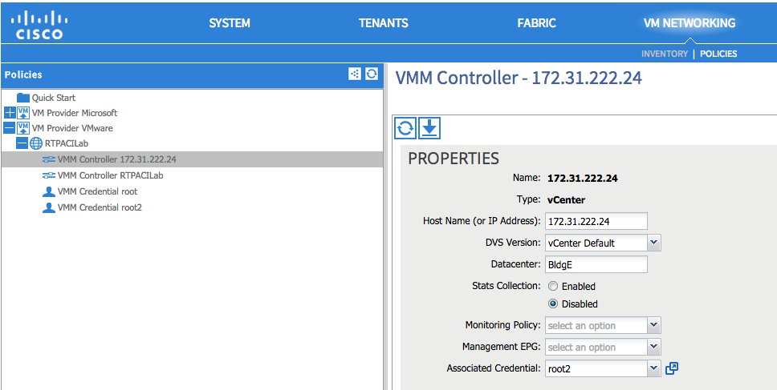{kind=link}
In the above screenshot, the Datacenter name is purposely misconfigured as BldgE instead of BldgF
Problem Description¶
Virtual Machine Manager (VMM) unassociation fails to delete Distributed Virtual Switch (DVS) in vCenter
Symptom¶
After removing a Virtual Machine Manager (VMM) configuration or removing a Virtual Machine Manager (VMM) domain from an End Point Group (EPG), the associated virtual port groups or DVS are not removed from the vCenter configuration.
Verification¶
Check to see that the port groups are not currently in use by a virtual machine network adapter.
This can be verified from the vCenter GUI, by accessing the settings for a virtual machine and individually inspecting the network backing for the vNIC adapters
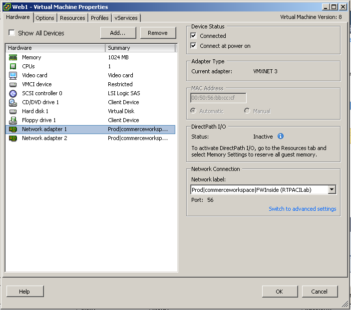{kind=link}
Another mechanism by which this can be verified is by inspecting the DVS settings, and viewing the Virtual Machines that are associated with the DVS.
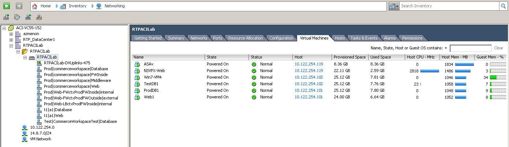{kind=link}
The list of virtual machines that are currently using a distributed virtual port group can also be found using the APIC GUI, by navigating to the VM Networking section, navigating into the Provider, the Domain, into the DVS, the expanding the port groups, and looking at each individual port group.
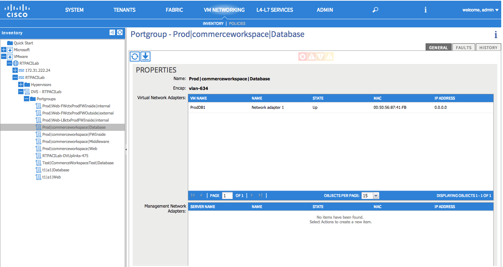{kind=link}
To resolve this particular issue, the backing on the Virtual Machine VNICs must be removed. This can be accomplished by either removing the Virtual Adapter entirely, or by changing the Virtual Adapter network backing to one that is not present on the DVS, including a local standard virtual switch or some other DVP.
Problem Description¶
Virtual Machine Manager hosted VMs are unable to reach the fabric, get learned by the fabric or reach their default gateway through a UCS Fabric Interconnect.
Symptom¶
Checking the endpoint table on the fabric does not show any new endpoints being learned, although the Distributed Virtual Port groups are being created on the vSwitch and VMs.
The VMs are unable to ping their gateway or other VMs
Verification¶
For these symptoms the first step is to check to see if the endpoint table on the leaf to which the UCS is attached is learning any endpoints in the EPG. The MAC address for the VM in question is 00:50:56:BB:D5:08, and it is unable to reach its default gateway
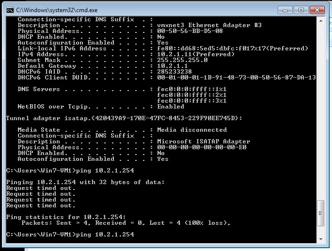{kind=link}
Upon inspecting the “show endpoint detail” output on the leaf, the MAC for the VM is missing from the output.
rtp_leaf1# show endpoint detail
Legend:
O - peer-attached H - vtep a - locally-aged S - static
V - vpc-attached p - peer-aged L - local M - span
s - static-arp B - bounce
+---------------+---------------+-----------------+--------------+-------------+------------------------------+
VLAN/ Encap MAC Address MAC Info/ Interface Endpoint Group
Domain VLAN IP Address IP Info Info
+---------------+---------------+-----------------+--------------+-------------+------------------------------+
Additionally, viewing the output of “show vlan” and grepping for the Test EPG, the interface that is expected to be configured with the EPG is not visible in the interfaces that the policy should be programmed on.
rtp_leaf1# show vlan | grep Test
39 Test:CommerceWorkspaceTest:Web active Eth1/42, Eth1/44, Po1
Inspecting the configuration on the Attachable Entity Profile for the interface group used on the UCS shows that no vSwitch policy is configured for the LLDP, CDP or LACP policies. Without these policies, the defaults will be inherited from the AEP itself, and as a result will be configured to run LLDP using whatever link aggregation protocol is used on the upstream links. This will cause the VDS to inherit these properties, and thus run incorrectly.
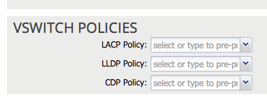{kind=link}
By right clicking on the Attachable Entity Profile and clicking the “Config vSwitch Policies” it is possible to associate override policies for the vSwitch. When using a UCS between the leaf and ESX hosts, these should be configured to disable LLDP, enable CDP and use Mac Pinning as the LACP policy, as shown below:
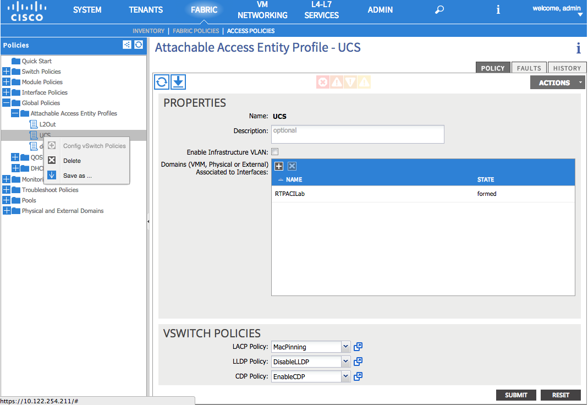{kind=link}
With the override in place, inspecting the endpoint table on the switch itself shows that the MAC address for the VM has been learned and the VLAN table shows that the interface where the EPG can be learned is correctly placed in the CommerceWorkspaceTest:Web EPG.
rtp_leaf1# show vlan | grep Test
14 Test:CommerceWorkspaceTest:Web active Eth1/27, Eth1/28, Po2, Po3
rtp_leaf1# show endpoint detail
Legend:
O - peer-attached H - vtep a - locally-aged S - static
V - vpc-attached p - peer-aged L - local M - span
s - static-arp B - bounce
+---------------+---------------+-----------------+--------------+-------------+------------------------------+
VLAN/ Encap MAC Address MAC Info/ Interface Endpoint Group
Domain VLAN IP Address IP Info Info\
+---------------+---------------+-----------------+--------------+-------------+------------------------------+
14 vlan-639 0050.56bb.d508 LV po2 Test:CommerceWorkspaceTest:Web
Further verification from the host itself shows that ping to the gateway is successful.